第3世代（ホウエン地方）ポケモンの英語名一覧
全135匹の英語名と由来
第3世代（ホウエン地方）のポケモン135匹の英語名を、図鑑番号順にまとめました。名前を押すと、英語版図鑑の説明文と日本語訳、英語名の由来が見られます。
| No. | 日本語名 | 英語名 | 英語名の由来 |
|---|---|---|---|
| 252 | 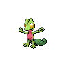 キモリ | Treecko | tree（木）とgecko（ヤモリ） |
| 253 | 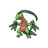 ジュプトル | Grovyle | Grove（木立）、reptile（爬虫類）、vine（つる）とivy（ツタ） |
| 254 | 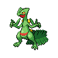 ジュカイン | Sceptile | sceptre（王笏）がもとになっていると考えられている |
| 255 | Torchic | torch（たいまつ）とchick（ひよこ） | |
| 256 | 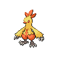 ワカシャモ | Combusken | combustion（燃焼）とchicken（ニワトリ） |
| 257 | Blaziken | blaze（炎）とchicken（ニワトリ） | |
| 258 | Mudkip | mud（どろ）、skip（スキップする）とmudskipper（ムツゴロウ） | |
| 259 | 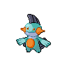 ヌマクロー | Marshtomp | marsh（沼地）とstomp（踏みつける） |
| 260 | Swampert | swamp（沼）、rampart（城壁）、expert（専門家）とearth（大地） | |
| 261 | 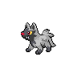 ポチエナ | Poochyena | pooch（わんこ）とhyena（ハイエナ） |
| 262 | Mightyena | mighty（力強い）とhyena（ハイエナ） | |
| 263 | 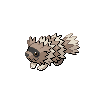 ジグザグマ | Zigzagoon | zigzag（ジグザグ）とraccoon（アライグマ） |
| 264 | Linoone | line（線）とraccoon（アライグマ） | |
| 265 | Wurmple | worm（虫）、rumple（しわくちゃにする）とsimple（単純な） | |
| 266 | Silcoon | silk（絹）とcocoon（まゆ） | |
| 267 | 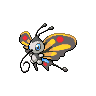 アゲハント | Beautifly | beauty（美しさ）とbutterfly（チョウ） |
| 268 | 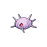 マユルド | Cascoon | cask（たる）、cast（配役）、cáscara（スペイン語で「殻」）とcocoon（まゆ） |
| 269 | 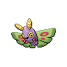 ドクケイル | Dustox | dust（ほこり）とtoxic（有毒な） |
| 270 | 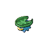 ハスボー | Lotad | lotus（ハス）、Nymphaeaceae（スイレン科）、tad（ほんの少し）とtadpole（オタマジャクシ） |
| 271 | 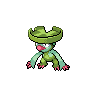 ハスブレロ | Lombre | lotus（ハス）、hombre（スペイン語で「男」）とsombrero（ソンブレロ帽） |
| 272 | 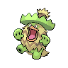 ルンパッパ | Ludicolo | ludic（遊びの）、ludicrous（ばかげた）、ridiculous（ばかげた）とpaludicolous（沼地に… |
| 273 | 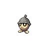 タネボー | Seedot | seed（種）、dot（点）とtot（ちびっ子） |
| 274 | Nuzleaf | nuzzle（鼻をすりよせる）、nose（鼻）とleaf（葉） | |
| 275 | Shiftry | shifty（ずるそうな）とtree（木） | |
| 276 | 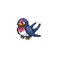 スバメ | Taillow | tail（しっぽ）とswallow（ツバメ、飲みこむ） |
| 277 | Swellow | swell（ふくらむ）とswallow（ツバメ、飲みこむ） | |
| 278 | Wingull | wing（翼）とgull（カモメ） | |
| 279 | 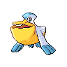 ペリッパー | Pelipper | pelican（ペリカン）、skipper（船長）、flipper（ひれ足）とpropeller（プロペラ） |
| 280 | Ralts | フランス語の名前は「Tarsal」で、「星の」の文字の並べかえから作られている | |
| 281 | 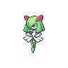 キルリア | Kirlia | Kirlian（オーラが写るといわれたキルリアン写真）がもとになっていると考えられている |
| 282 | Gardevoir | garde（フランス語で「守る」）、garder（フランス語で「守る」）とdevoir（フランス語で「義務」） | |
| 283 | Surskit | surface（表面）、surf（波乗り）、skitter（ちょろちょろ走る）とwater skeeter（アメンボ） | |
| 284 | Masquerain | masquerade（仮面舞踏会）とrain（雨） | |
| 285 | Shroomish | mushroom（キノコ）、-ish（「〜っぽい」を表す語尾）とskirmish（小競り合い） | |
| 286 | Breloom | umbrella（かさ）とmushroom（キノコ） | |
| 287 | 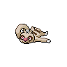 ナマケロ | Slakoth | slack off（さぼる）とsloth（ナマケモノ） |
| 288 | Vigoroth | vigor（活力）、vigorous（元気な）とsloth（ナマケモノ） | |
| 289 | Slaking | slack（怠ける）とking（王） | |
| 290 | 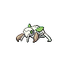 ツチニン | Nincada | ninja（忍者）とcicada（セミ） |
| 291 | Ninjask | ninja（忍者）とmask（仮面） | |
| 292 | Shedinja | shed（脱ぎ捨てる）とninja（忍者） | |
| 293 | Whismur | whisper（ささやく）とmurmur（ささやき） | |
| 294 | 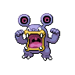 ドゴーム | Loudred | loud（うるさい）とdread（恐怖） |
| 295 | Exploud | explode（爆発する）とloud（うるさい） | |
| 296 | 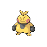 マクノシタ | Makuhita | |
| 297 | Hariyama | ||
| 298 | Azurill | Azure（空色）、azul（スペイン語で「青」）とrill（小川） | |
| 299 | Nosepass | nose（鼻）、north（「北」のなまり）とcompass（方位磁針） | |
| 300 | Skitty | skittish（臆病な）とkitty（にゃんこ） | |
| 301 | 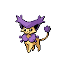 エネコロロ | Delcatty | delicate（繊細な）とcatty（意地悪な） |
| 302 | Sableye | sable（クロテン）とeye（目） | |
| 303 | 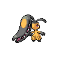 クチート | Mawile | maw（大きな口）、wile（策略）とsmile（ほほえみ） |
| 304 | Aron | armor（よろい）とiron（鉄） | |
| 305 | Lairon | lairy（派手な）、lair（すみか）とiron（鉄） | |
| 306 | Aggron | aggressive（攻撃的な）、aggregate（建設用の砂利）とiron（鉄） | |
| 307 | 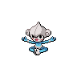 アサナン | Meditite | meditate（めい想する）、petite（小柄な）とtyke（ちびっ子） |
| 308 | Medicham | meditate（めい想する）とchampion（チャンピオン） | |
| 309 | 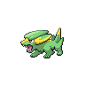 ラクライ | Electrike | electric（電気の）とlightning strike（落雷） |
| 310 | Manectric | mane（たてがみ）とelectric（電気の） | |
| 311 | 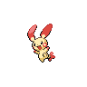 プラスル | Plusle | |
| 312 | Minun | minus（マイナス）がもとになっていると考えられている | |
| 313 | Volbeat | volt（ボルト（電圧の単位））、beetle（甲虫）とbeat（リズム、打つ） | |
| 314 | Illumise | illuminate（照らす）とluciferase（ホタルの光る酵素） | |
| 315 | Roselia | rose（バラ）、azalea（ツツジ）とcamellia（ツバキ） | |
| 316 | 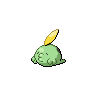 ゴクリン | Gulpin | gulping（ごくりと飲む）、sculpin（カジカ）とgulp in（飲みこむ） |
| 317 | 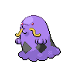 マルノーム | Swalot | swallow（ツバメ、飲みこむ）とlot（たくさん） |
| 318 | 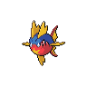 キバニア | Carvanha | carve（彫る）、carnivore（肉食動物）とpiranha（ピラニア） |
| 319 | 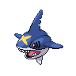 サメハダー | Sharpedo | shark（サメ）、sharp（鋭い）とtorpedo（魚雷） |
| 320 | Wailmer | whale（クジラ）、wail（泣きわめく）とmer（フランス語で「海」） | |
| 321 | Wailord | wail（泣きわめく）とlord（領主） | |
| 322 | Numel | numb（しびれた）とcamel（ラクダ） | |
| 323 | Camerupt | camel（ラクダ）とerupt（噴火する） | |
| 324 | 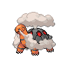 コータス | Torkoal | フランス語の名前は「Chartor」で、charbon（石炭）、tortue（リクガメ）から作られている |
| 325 | 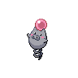 バネブー | Spoink | Spring（ばね）とoink（ブーブー） |
| 326 | 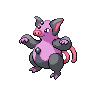 ブーピッグ | Grumpig | grumpy（不機嫌な）とpig（ブタ） |
| 327 | Spinda | spin（回る）とpanda（パンダ） | |
| 328 | Trapinch | trap（わな）とpinch（つまむ） | |
| 329 | 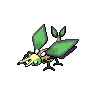 ビブラーバ | Vibrava | vibrate（振動する）とlarva（幼虫） |
| 330 | Flygon | fly（飛ぶ）、dragon（ドラゴン）とdragonfly（「トンボ」の語順を入れかえたもの） | |
| 331 | Cacnea | cactus（サボテン）、cactus（サボテン）とdebonair（あかぬけた） | |
| 332 | Cacturne | cactus（サボテン）とnocturne（夜想曲） | |
| 333 | 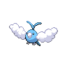 チルット | Swablu | cotton swab（綿棒）とblue（青） |
| 334 | Altaria | alto（スペイン語で「高い」）、Portuguese（ポルトガル語）とalto（イタリア語で「高い」） | |
| 335 | 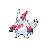 ザングース | Zangoose | mongoose（マングース）がもとになっていると考えられている |
| 336 | Seviper | sever（断ち切る）、severe（厳しい）、serpent（大蛇）とviper（毒ヘビ） | |
| 337 | Lunatone | lunar（月の）とstone（石） | |
| 338 | Solrock | solar（太陽の）とrock（岩） | |
| 339 | 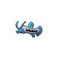 ドジョッチ | Barboach | barb（とげ）、Barbel（バーベル（コイ科の魚））とloach（ドジョウ） |
| 340 | Whiscash | whisker（ひげ）、mustache（口ひげ）とcatfish（ナマズ） | |
| 341 | Corphish | corps（部隊）、corporal（伍長）とcrayfish（ザリガニ） | |
| 342 | Crawdaunt | crawdad（ザリガニ）、crawfish（ザリガニ）、daunt（ひるませる）とtaunt（あざける） | |
| 343 | 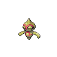 ヤジロン | Baltoy | balancing toy（やじろべえ）がもとになっていると考えられている |
| 344 | Claydol | clay（粘土）、idol（アイドル）とdoll（人形） | |
| 345 | Lileep | 中国語の名前は「触手百合」 | |
| 346 | 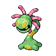 ユレイドル | Cradily | cradle（ゆりかご）とcrinoid（ウミユリ） |
| 347 | Anorith | Anomalocaris（アノマロカリス）、anorthosite（斜長岩）と-lith（「石」を表す語尾） | |
| 348 | Armaldo | armado（スペイン語で「武装した」）、Anomalocaris（アノマロカリス）、shield（盾）とald（古い英… | |
| 349 | Feebas | feeble（弱々しい）とsea bass（スズキ） | |
| 350 | 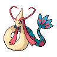 ミロカロス | Milotic | Venus de Milo（ミロのヴィーナス）、aquatic（水生の）、melodic（旋律の美しい）とexotic（… |
| 351 | Castform | forecast（予報）、transform（変身する）とform（形） | |
| 352 | Kecleon | chameleon（カメレオン）がもとになっていると考えられている | |
| 353 | 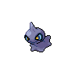 カゲボウズ | Shuppet | shadow（影）、sheet（布）とpuppet（あやつり人形） |
| 354 | Banette | bane（災いのもと）とmarionette（あやつり人形） | |
| 355 | Duskull | dusk（夕暮れ）とskull（頭蓋骨） | |
| 356 | 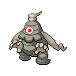 サマヨール | Dusclops | dusk（夕暮れ）とcyclops（一つ目の巨人キュクロプス） |
| 357 | Tropius | tropical（熱帯の）と-saurus（恐竜の名前に使う「トカゲ」を表す語尾） | |
| 358 | 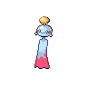 チリーン | Chimecho | chime（チャイム）とecho（こだま） |
| 359 | Absol | absolute（絶対の）とabsolution（罪の許し） | |
| 360 | Wynaut | フランス語の名前は「Okéoké」で、「オーケー」の重ね言葉から作られている | |
| 361 | Snorunt | snow（雪）とrunt（ちび） | |
| 362 | 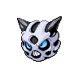 オニゴーリ | Glalie | glacier（氷河）とGoaltender（ゴールキーパー） |
| 363 | 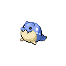 タマザラシ | Spheal | sphere（球）とPinniped（鰭脚類（アザラシなど）） |
| 364 | Sealeo | sea（海）、seal（アザラシ）とleo（ラテン語で「ライオン」） | |
| 365 | Walrein | walrus（セイウチ）、reign（統治）とrain（雨） | |
| 366 | Clamperl | clamp（はさむ）、clam（二枚貝）とpearl（真珠） | |
| 367 | 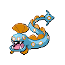 ハンテール | Huntail | hunt（狩る）とtail（しっぽ） |
| 368 | 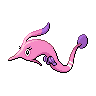 サクラビス | Gorebyss | gore（流血）がもとになっていると考えられている |
| 369 | 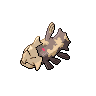 ジーランス | Relicanth | relic（遺物）、Relict（生き残り）とcoelacanth（シーラカンス） |
| 370 | 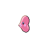 ラブカス | Luvdisc | love（愛）とDiscus（円盤） |
| 371 | Bagon | baby（赤ちゃん）とdragon（ドラゴン） | |
| 372 | 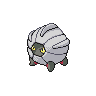 コモルー | Shelgon | shell（殻）とdragon（ドラゴン） |
| 373 | Salamence | Salamander（サンショウウオ）、menace（脅威）、vengeance（復讐）とvehemence（激しさ） | |
| 374 | Beldum | dumbbell（ダンベル）がもとになっていると考えられている | |
| 375 | Metang | metal（金属）とtang（ピリッとした味） | |
| 376 | メタグロス | Metagross | metal（金属）とcross（十字） |
| 377 | レジロック | Regirock | regis（ラテン語で「王の」）とrock（岩） |
| 378 | Regice | regis（ラテン語で「王の」）とice（氷） | |
| 379 | Registeel | regis（ラテン語で「王の」）とsteel（はがね） | |
| 380 | Latias | lateō（ラテン語で「隠れる」）がもとになっていると考えられている | |
| 381 | ラティオス | Latios | lateō（ラテン語で「隠れる」）と-os（ギリシャ語風の語尾） |
| 382 | Kyogre | ogre（人食い鬼）がもとになっていると考えられている | |
| 383 | グラードン | Groudon | ground（地面）、don（首領）と-don（「〜の歯」を表す語尾） |
| 384 | Rayquaza | ||
| 385 | ジラーチ | Jirachi | желать zhelat'（ロシア語で「願う」）がもとになっていると考えられている |
| 386 | Deoxys | DNA（遺伝子）がもとになっていると考えられている |